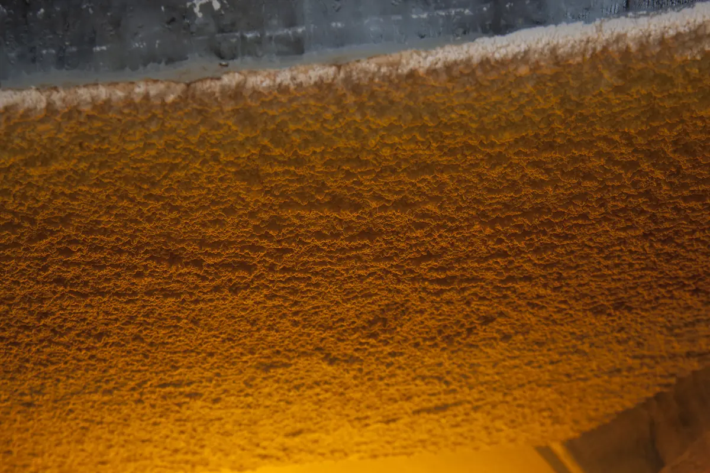
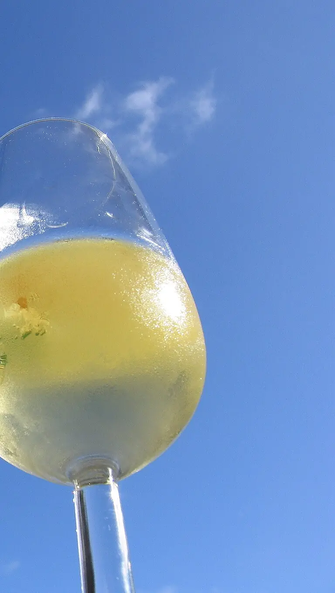

Los vinos de las tres andanas
Cuatro vinos y ninguna añada. Todos salen de una solera, así que cada botella lleva muchas cosechas mezcladas, y en cada bota hay una marca de tiza que dice qué vino guarda.


Fino, diez años bajo flor
Es el vino de la casa y el que más se bebe en la nave. Pasa diez años de media bajo la flor, sin tocar el aire, y por eso sale tan pálido y tan seco. Se embotella en primavera, cuando la flor está más gruesa.
- Uva
- Palomino fino del pago de Macharnudo
- Crianza
- Biológica, bajo velo de flor
- Solera
- Tres andanas; se saca un tercio al año
- Edad media
- 10 años
- Grado
- 15 % vol.
- Color
- Amarillo pajizo, muy pálido
- Nariz
- Almendra cruda, miga de pan, levadura y hierba seca.
- Boca
- Seco, ligero y salino, con un final largo y un punto amargo.
- Cómo servirlo
- Muy frío, entre 7 y 9 °C, en copa de vino blanco.
- Con qué
- Aceitunas, almendras, jamón, pescado frito y mariscos.
- Una vez abierto
- Una semana en la nevera, bien tapado.
- Botella
- 75 cl · 16 €
Amontillado, dieciocho años
Empieza como nuestro fino. Pasados los diez años la flor se agota; entonces lo encabezamos a diecisiete grados y lo dejamos otros ocho años en una solera sin velo, donde el aire lo oscurece despacio.
- Uva
- Palomino fino
- Crianza
- Biológica y después oxidativa
- Solera
- Nace de la solera del fino y sigue en otra de dos andanas
- Edad media
- 18 años
- Grado
- 18 % vol.
- Color
- Ámbar, con reflejos de topacio
- Nariz
- Avellana tostada, yodo, madera vieja y un fondo de levadura.
- Boca
- Seco y sabroso, con más cuerpo que el fino y un final muy largo.
- Cómo servirlo
- Fresco, entre 12 y 14 °C.
- Con qué
- Consomé, alcachofas, setas, atún a la plancha y quesos curados.
- Una vez abierto
- Un mes, en un sitio fresco y oscuro.
- Botella
- 50 cl · 28 €

Oloroso, dieciséis años
Se encabeza desde el primer día para que no crezca la flor. Sin velo, el vino respira a través de la madera, se concentra y gana color. Como sacamos poco cada año, es el vino con más cosechas dentro.
- Uva
- Palomino fino
- Crianza
- Oxidativa, sin velo de flor
- Solera
- Tres andanas; se saca un quinto al año
- Edad media
- 16 años
- Grado
- 19 % vol.
- Color
- Caoba brillante
- Nariz
- Nuez, cuero, tabaco de pipa y piel de naranja amarga.
- Boca
- Seco aunque huela a dulce, redondo y cálido.
- Cómo servirlo
- Entre 13 y 15 °C, en copa amplia.
- Con qué
- Carnes de caza, guisos, rabo de toro y chocolate negro.
- Una vez abierto
- Mes y medio sin perder nada.
- Botella
- 50 cl · 26 €
Pedro Ximénez, doce años
La uva se seca al sol sobre esteras hasta que se vuelve pasa. El mosto, espeso y muy dulce, se encabeza y se cría en una solera de doce botas al fondo de la nave.
- Uva
- Pedro Ximénez asoleada
- Crianza
- Oxidativa
- Solera
- Su propia solera, la más pequeña de la casa
- Edad media
- 12 años
- Grado
- 15 % vol.
- Color
- Caoba muy oscuro, casi negro
- Nariz
- Higo seco, pasa, dátil, café y cacao.
- Boca
- Dulce, denso y sedoso, con la acidez justa para no cansar.
- Cómo servirlo
- Entre 12 y 14 °C, en copa pequeña.
- Con qué
- Helado de vainilla, postres de chocolate y quesos azules.
- Una vez abierto
- Dos meses, o más.
- Botella
- 37,5 cl · 24 €
Dónde se compran
Ver visitas y catasLas botellas se venden solo en la bodega, al terminar la visita, y solo a mayores de 18 años. No hacemos envíos: preferimos saber a quién le damos cada botella y contarle cómo guardarla, cuánto aguanta abierta y a qué temperatura servirla.
